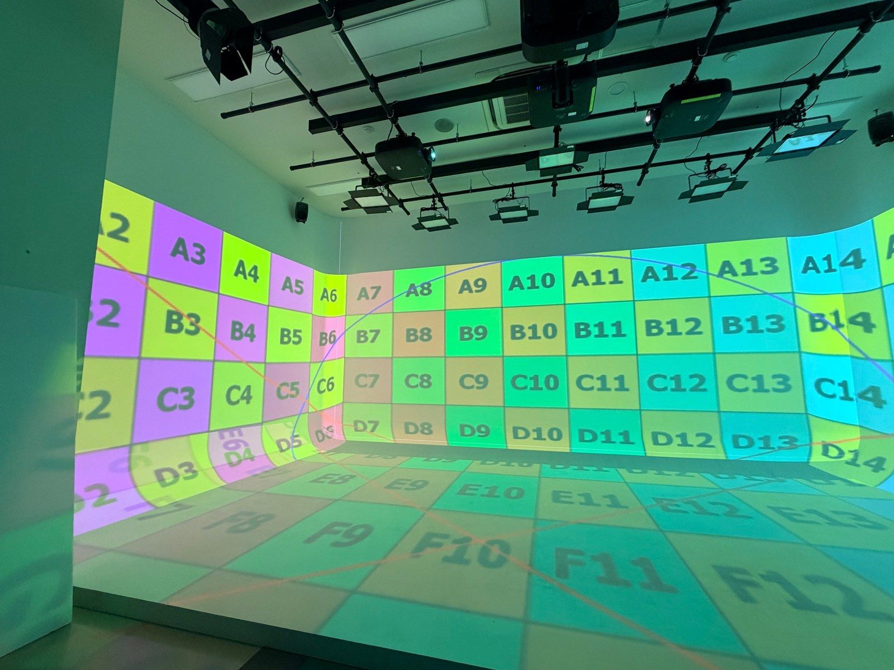

Pre-rendered
영상 장면
나방 · 거미 · 기억 회상 · 엔딩
Cinema 4D · Octane · After Effects 로 미리 만들고, 필요에 따라 Houdini · Blender 로 만든 오브젝트와 효과를 더합니다. 관객의 움직임에 반응하지 않고, 정해진 흐름으로 이어집니다.
- Cinema 4D
- Octane
- After Effects
- Houdini · Blender
Technology · LIMEN
관객의 움직임이 네 면의 빛이 되기까지 —
감지하고, 합치고, 반응하고, 투사하는 흐름.
01 / In the room
관객이 걷고 멈추는 자리를 센서가 읽고, 그 자리를 중심으로 정면 · 좌 · 우 벽과 바닥의 흐름이 달라집니다. 반응하는 장면은 개미 · 반딧불이 · 사람·군중 세 장면입니다.
02 / Signal path
Kinect v2 는 PC 한 대에 한 대만 연결됩니다. 그래서 두 대의 센서를 두 대의 PC 가 나눠 읽고, 메인 PC 가 하나의 방으로 합칩니다. 장치를 누르면 하는 일을 볼 수 있습니다.
03 / Sensing
두 센서는 관객 뒤쪽 좌 · 우에서 무대 안쪽으로 비스듬히 교차해 봅니다. 한 사람을 두 센서가 함께 보면 하나로 합치고, 한쪽만 보면 그 시야로 이어 갑니다.
커서를 방 위에 올려 보세요 · 관객의 자리가 됩니다 (웹 시연 · 실제 수치 기반 단순화)
04 / Output
프로젝터 네 대가 한 면씩 맡고, MadMapper 에서 면마다 워핑 · 블렌딩해 정면 · 좌 · 우 벽과 바닥을 한 공간으로 잇습니다. 네 면의 영상은 늘 같은 시간을 보여 줍니다.
면에 커서를 올리면 담당 프로젝터와 제작 규격이 보입니다 · 규격은 제작 인수인계 기준이며 현장에서 다시 확인합니다

05 / Two ways of making
Pre-rendered
나방 · 거미 · 기억 회상 · 엔딩
Cinema 4D · Octane · After Effects 로 미리 만들고, 필요에 따라 Houdini · Blender 로 만든 오브젝트와 효과를 더합니다. 관객의 움직임에 반응하지 않고, 정해진 흐름으로 이어집니다.
Real-time
개미 · 반딧불이 · 사람·군중
Unity 가 두 센서를 합친 관객의 자리를 받아 그 순간의 장면을 그립니다.
관객은 공간에 영향을 주지만 모든 것을 조종하지는 않습니다. 장면의 큰 흐름은 정해져 있고, 반응은 관객 둘레에서 일어납니다.
06 / Stack & open source
Behind the room
전시장에서는 장치 대신 흐름만 남습니다. 그 흐름을 만든 날들의 기록은 ARCHIVE 에 있습니다.